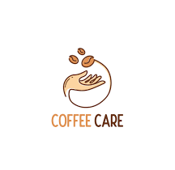
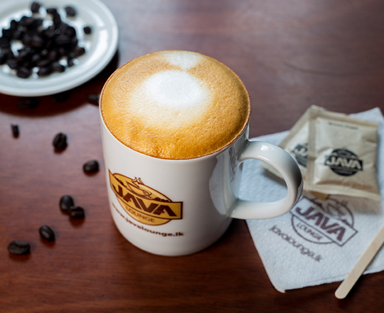

Java Lounge Colombo is one of the oldest coffee houses in Sri Lanka. Java is well known for emphasizing on serving quality coffee all the time. We currently have 13 branches and is growing rapidly..
Java Lounge is yet another venture from the Sri Lankan entrepreneur and E-Commerce Guru Dulith Herath. Java Lounge came into existence mainly because of his addiction to coffee, any workaholic would agree and bear witness to a condition called “Procaffeinating” the tendency to not start anything without a cup of coffee..
Java Lounge is a startup which was created to cater to the true authentic coffee shop experience, by emphasizing on the high-quality coffee, which we have not compromised whatever the situation we faced. The true reason for the success of Java Lounge is its work force, some employees being a part of the Java team since its inception, we at Java appreciate all employees starting from the security.
With our humble beginnings at Java Lounge Jawatte, throughout these five years Java Lounge has grown strength to strength expanding our branches to Barns Place, Nawala, Bambalapitiya, Kandy, Mount Lavinia, Nugegoda, Palawaththa, Peradeniya, Ambuluwawa, Fort, Jawaththa, Weli Park Nugegoda and Mirihana with ideas of expanding even further to ensure that a good quality cup of coffee is just within your reach.
